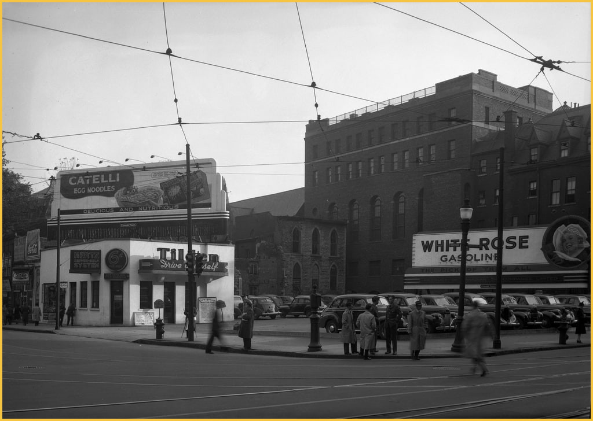

Published dossier 105
Independently reviewed and fully verified.

Visual evidence
- The reviewed pixels are classified as image mode ground_street.
Archive metadata report
Rights and attribution
cc-by-4.0; Ville de Montréal / Archives de la Ville de Montréal
Uncertainty
Candidate claims are limited to accepted/adjudicated visual classifications and reported metadata labels.